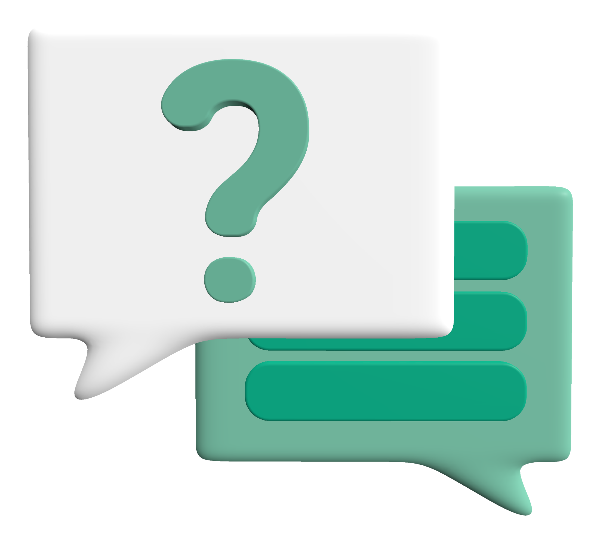

TopCashback Compare allows you to compare quotes for Insurance, Energy, Broadband and more, from a wide range of leading providers. You will earn cashback on your purchase, combining two great savings in one place. All you need to do is select the product you are looking for, choose your quote, and fill out the quote form.
TopCashback Compare Car Insurance is powered by Confused.com. We partner with a range of providers to make it easy for you to compare quotes and find the best deal for you. And if all that wasn't enough, you can even earn cashback on top.
Once you have clicked out to an insurer to make your purchase, we will
display this within your TopCashback account as a Pending Transaction.
Once your policy purchase has been validated by the insurer, the
pending transaction will be updated to say Confirmed.
This process can take 6 to 8 weeks to be completed. Any pending
transactions which have not been approved will be declined after
6 months.
If you have made a policy purchase but your transaction is either not
showing in your account or has not moved to Confirmed after 8 weeks,
please get in touch. The TopCashback team will be happy to help
further.
No, you will still pay the same price for your car insurance, whether you pay annually or monthly. Your cashback will then be credited to your TopCashback account, and you can withdraw it once it's reached Payable status.
Yes, all you need to do is complete your car insurance quote via TopCashback Compare and click on the quote results. If a phone number is shown for you to call, you can contact the company and complete your car insurance policy purchase over the phone, but you must provide the Quote Reference to your insurer.
